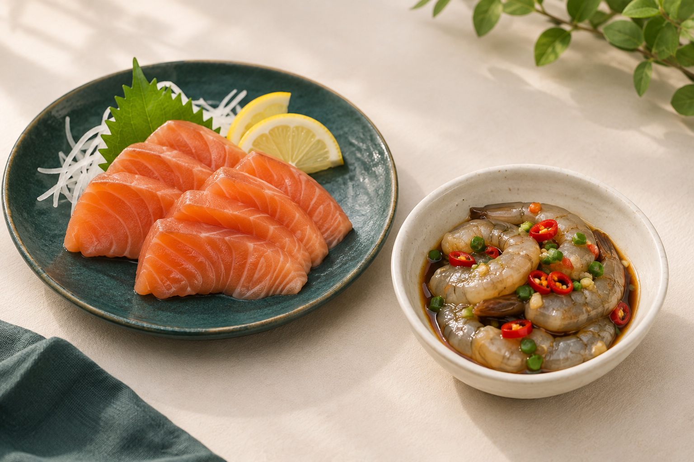

校园生食食品安全 · 互动科普
鲜味之外，
你了解多少？
从生鱼片到生腌，从冷冻到解冻。
用 10 个生活情景，检验你的食品安全知识。
10 道单选题3 分钟左右逐题解析
每题 10 分，不限时。无需登录，答题成绩不上传。

生活情景 · 单项选择
请选择一个答案
答错也有收获：看懂解析，再继续下一题。
校园生食食品安全 · 互动科普
从生鱼片到生腌，从冷冻到解冻。
用 10 个生活情景，检验你的食品安全知识。
每题 10 分，不限时。无需登录，答题成绩不上传。

生活情景 · 单项选择
答错也有收获：看懂解析，再继续下一题。